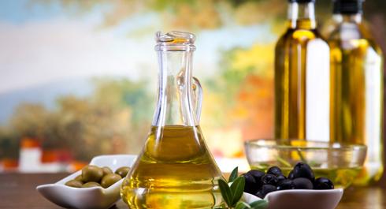

The ultimate goal of this week’s infoposts is the practical lesson on how to create your own diet plan. It is a long read, but we tried to make it as simple and clear as possible.
Nutrition plan template
1. Calculate the calories of your current diet.
2. Check the balance of proteins, fats, carbohydrates and minerals.
3. Check the quality of the products.
4. Set the goal (gaining weight, sustaining current weight or losing weight).
5. Adjust the diet, preserving the balance and the quality.
6. Evaluate the result in 4-6 weeks.
Caloric value of your current diet
To understand what direction you should be moving in, firstly you need to assess your current status. For that purpose, you need to calculate how many calories a day you currently consume. It is not a specific number on a specific day that is of interest, but an average value for 1-2 weeks.
You should start recording everything you eat during the day. You can do it on paper, in Excel spreadsheet, you can use some app or a specialised web-site. It is important that you put down literally everything you eat, because statistics says that people are often wrong (downwards) about how many calories they actually consume.
It should be mentioned that apps and web-sites have huge databases of products and they are constantly updated. You can also create your own recipes and add products to your personal database.
We would like to remind that you must weigh the final product, because its weight changes during cooking and it may shift the meal’s caloric value (A perfect decision is to write down the weight of your cooking pots – it will save you the extra fuss). But don't remember that water has zero caloric value.
Cooking methods and caloric value
Various cooking methods have different impact on products. E.g, if you are frying meat, meat subproducts or fish with oil, you need to add 20% of general caloric value of oil that you poured onto a pan. I.e. if you pour 100 g of oil to fry meat, then 20 g will absorb into the meat, some will remain on the pan and some will evaporate. It’s better to avoid oil at all and switch to boiling or steaming, but not everyone can do that.
When boiling meat or fish 20% of caloric value boils into the broth. It means you need to deduct 20% of its raw caloric value.
The same applies to boil vegetables: potato, carrot, beet etc. You also deduct 20% of their raw caloric value.
If you cook the products in an oven or a microwave, the caloric value remains the same.
Caloric value of cereals and pasta is marked for dry product. When boiled in water (which has 0 calories), they swell and increase in volume. It means that the size and volume increase but the caloric value remains the same. It is a common amateur mistake, when they, for example, boil 150g of rice, getting, say, 800g of boiled rice, and believe that they get calories from these 800g.
If you grill the meat (barbecue), the initial caloric value increases by 20%.
When boiling meat or fish 20% of caloric value boils into the broth. It means you need to deduct 20% of its raw caloric value.
The same applies to boil vegetables: potato, carrot, beet etc. You also deduct 20% of their raw caloric value.
If you cook the products in an oven or a microwave, the caloric value remains the same.
Caloric value of cereals and pasta is marked for dry product. When boiled in water (which has 0 calories), they swell and increase in volume. It means that the size and volume increase but the caloric value remains the same. It is a common amateur mistake, when they, for example, boil 150g of rice, getting, say, 800g of boiled rice, and believe that they get calories from these 800g.
If you grill the meat (barbecue), the initial caloric value increases by 20%.
The hardest thing when calculating caloric value is to hold for the first week. Many people can’t keep these numbers in their heads and abandon calculations for good. But those who get used to it, quickly create their own catalogue of products, and are able to calculate everything in a few minutes. Considering that majority of people have the same diet and use the same recipes, you will have to calculate everything only once.
A hint for the lazy
In order not to calculate the caloric value of individual meals, you can use different containers to assess the meal size. In that case you will need to calculate the caloric value of a container and then continue measuring everything with containers.
Balancing diet
After you calculate the caloric value and contents of your diet, you have to check it for balance first. As you have already learned from our previous infoposts, WHO recommendations are to maintain the following ratio: Proteins 10-15%, Fats 15-30% (including irreplaceable aliphatic acids like Omega-3 and Omega-6), Carbohydrates 55-75%. It is a caloric ratio. But it is easier to weigh in grams, therefore if we convert calories into grams, you should remember that 1 gram of fat is twice as rich (9 to 4 ratio) as proteins and carbs. As a result, we get the following: Proteins 10-18%, Fats 7-16%, Carbs 66-81%.
A reminder: the above presented ratio is NOT mandatory, and may vary individually, but you can use it as a reference. Particularly to balance Fats and Carbs. We have already explained the roles of other “components” in our body.
Also, make sure that your diet includes 25-30g of fiber (the recommended daily allowance for a grown up person).
Food quality
After you have balanced you diet in terms of micronutrients, you need to make sure that you receive these “components” from high-quality sources. Because it is much easier to consume excess amount of calories with quality products, than with various cakes and sodas.
For your convenience, we drafted a list of such sources and even split them into categories. Enjoy!
Protein products

Poultry
Wide range of flavours and reasonable price of the basic products (chicken, turkey, goose) make poultry an excellent source of protein. Furthermore, poultry is reach in microelements, like iron and zinc. Keep in mind that different kinds of poultry have different amount of fat. Pick less fatty kinds of meat, remove the skin and the visible fat. The preferable cooking methods are stewing, boiling and roasting. To diversify flavours you can include grilled poultry a few times per month. Chicken and turkey breasts are sources of lean protein with low fat. It is particularly important if you are planning to lose weight.
Eggs
A good amino acid profile combined with vitamins and minerals make eggs a good source of protein. There are varieties that are also rich in irreplaceable Omega-3 aliphatic acids, that make them even healthier. The egg-yolk contains lots of fats and cholesterol, which is important to know if you are susceptible to cardiovascular diseases – you should resort to one egg a day. You should eat them heated.
Red meat
Various kinds of red meat (beef, mutton, veal, pork) are also characterised by good amino acid profile, high concentration of vitamins, creatine, microelements such as iron and zinc, conjunctival linoleic acid. The sub products are particularly rich in vitamins and microelements. You should choose low-fat types of meat that was boiled, stewed or roasted.
Fish and seafood
High quality source of protein with excellent flavours. Low-fat fish sorts contain large quantities of protein and few calories. The sorts rich in fat contain lots of healthy fats, including Omega-3 aliphatic acids. Alternating various types makes the diet more variable and healthier. It should be mentioned that sea fish (especially large predators) may contain large quantities of methylmercury – therefore you should limit or exclude it from the diet of small children and pregnant women. However, if you study the tables of mercury concentration in fish, you can choose the safest option. Seafood is low-fat and tasty source of protein – squids, crabs, shrimps, mussels, rapa whelks, krill, etc.
Dairy products
Low-fat (3-5%) cottage cheese, Greek yoghurt, ricotta, brinsen cheese and other (3-7% of fat) will enrich your diet not only with proteins but also with calcium. These products can enrich the flavor of meals, because they may be served differently: salty, sweet, neat, with vegetables, fruit and other products. Fat kinds of cheese are high-calorie food, so you should monitor their consumption closely. Protein cocktails from dry milk, egg albumen or soy are a good source of diet protein with a complete list of ingredients and numerous flavours. But do not overestimate this product – it is more a diet supplement, than a full-fledged food substitute, but worthwhile nevertheless.
Beans
Beans are also categorised as protein products, despite high concentration of carbs. Soy and soy products are also included into beans. In spite of warnings about high concentrations of phytoestrogen, there is no point abandoning this line of products – the concentration of these substances in any particular portion of soy products does not pose any harm. Peanuts and other nuts should be limited due to high concentration of fat (see “Sources of healthy fats”).
Complex Carbohydrates

Cereals
Buckwheat, oatmeal, barley, pearl porridges, rice of various sorts are tasty and healthy sources of carbs. While of average caloric value they contain lots of healthy components, including vitamins and fiber.
Products from durum wheat
Products from durum wheat (pasta, macaroni, ravioli) have become popular not only due to …, but also because they satisfy the hunger and ensure proper control of appetite, being digested up to 8 hours.
Bread
Bread is an integral part of many traditional and modern cuisines. However, apart from rich contents, you should keep in mind its quite high caloric value, especially if you are losing weight. Switch to wholemeal bakery, rye bread, low-fat types like lavash. White bread and French bread can also be included, but if you are planning to lose weight, you should limit their consumption as well.
Potatoes
Potatoes are rich in healthy minerals, and if prepared without oil, have average caloric value, and therefore cannot spoil your figure, if properly integrated into your diet.
Soups
We can’t call soups entirely carb product, because the broth can contain a lot of fat. However, a low-fat soup may have the same amount of calories like any other portion of carbs. If you want to include soups into your diet, you can make them several times a week.
Fats

Remember that excess fats and calories will not provide good results and can have negative influence on your health in the long run. You need to ration the consumption of the above mentioned products. You may consider the following daily consumption options: 15-20 g of oil, added to your salads or other meals; 30-50 g of dry nuts and sunflower seeds or you can add black olives or avocado to your meals. You can also take capsular fish oil according to the user’s manual (after consulting the doctor).
Fruit and vegetables

Fruit and vegetables are rich in minerals, vitamins, biologically active substances, like fruit acids, pectins, gums, etc. Fiber is an important component. Modern city dwellers consume it 2-4 times below the norm and that increases the risk of cardiovascular diseases, cancer and disrupts the digestive system.
Many health organisations, including WHO, recommend eating vegetables and fruit up to 5-8 times a day and stress that it has a positive impact on health and life expectancy.
Drinks

Sufficient hydration is a core condition for good health and well-being. We use the whole spectrum of drinks to quench our thirst and each of them has its pros and cons.
Some drinks have extra calories and it is their main drawback – drinking several glasses a day is equal to eating solid food. But liquid calories do not satiate and such drinks have fewer healthy nutrients. Remember this if you are planning to lose weight. In that case you should avoid liquid calories. And on the contrary: if you are planning to gain weight, this drawback can turn to advantage. If you can’t get things moving, liquid calories can increase the caloric value of the diet without straining the digestive system.
At the start of week we have discussed the concept of balance of calories – that is why we strongly recommend improving with your diet keeping in mind this ‘balanced template’.
If your weight is stable, your received calories should equal the spent ones. If you do not aim to change your weight, you can adhere to this template, do sports, improve your physical condition. You should always go back to this template after cycles of gaining or losing weights.
If your weight is dropping, you consume insufficient calories. Depending on the goal, you can adjust caloric value, increase the size of meals or leave it all as is, if you want to lose weight or you are comfortable with the current template.
If you are gaining weight, you consume excess calories. The adjustment follows the same rules - you regulate the size of your meals, eat less fat food. If you adhered to improper diets for a long time, then do not rush to correct them – it’s better to wait until your weight stabilises that get dragged into a vicious circle of ill-fated weight loss.
We advise splitting your daily diet into 3 mealtimes, each consisting of 4 parts – one for every category of products: protein, complex carbs, salads, water (drinks).
The size of each part (portion) should be equal to the size of your fist. That makes it easy to assess the size of the portion in any situation. Besides, your fist’s size is proportional to that of your body, that is why this parameter is individual to an extent. If you have too small/large fists you can increase/decrease the portion size by 10-15%. Do not be afraid to make a mistake or measurement errors – they will not have any negative impact on the final result.
If you want to get more accurate numbers, you need to weigh the protein meal or fruit first. For females the average weight should be 140-160g and 200-220g for males. It can be a bit more, but not less. For more precise diet adjustment, you can calculate the caloric value and the contents of your menu, although often there is no necessity in it.
Try eating after equal periods of time and choose the most suitable option first. Also, you can change the sequence of meals in the template and even split your diet into more mealtimes, like splitting fruit into several mealtimes. But before changing anything, try out the standard template – maybe it will best suit you.
By the way, the meals in this template are not confined to a particular time, you can vary it whatever you like. For example, if you like late dinners, you can have them, although it is better to eat 1.5-2 hours before sleep.
Stick to the diet template for 3-4 weeks, monitoring your weight. Keep in mind that weight can shift during the day, so try weigh yourself at the same time and calculate the average weight for several days.
This example will demonstrate how you should actually take the aforementioned steps. With real numbers and products!
1. Calculated the caloric value of the current diet. Got 2000 calories. 2. Set the goal. Decided to lose weight a little. The target caloric value was 1800 calories. 3. Split into Proteins, Fats and Carbs, using WHO recommendations as a reference – 20% Protein (360 calories), 20% Fats (360 calories), 60% Carbs (1080 calories). 4. Transferred into grams to simplify calculations during cooking, because the product contents are written in grams. Got 90 g of Protein, 40 g of Fats, 270 g of Carbs. 5. Start reshuffling our usual diet to fit it into the necessary limits of PFCC. You won’t succeed at once, but after a couple of iterations and rearrangements everything will fit perfectly. The meal sizes are individual; in our case the caloric value is more or less equal for each of them. Here’s what we’ve got:
Breakfast:
1. Muesli (40g) with milk (200ml)
2. Tea with sugar (16g) and 8% fat cottage cheese (100g)
CPFC: C – 445cal, P – 23g, F – 16g, C – 50g
Lunch:
1. Buckwheat porridge (150g) with boiled chicken liver (80g)
2. Radish (100g) with sweet pepper (150g)
3. Wheat bread (30g)
4. Tea with sugar (16g) and 8% fat cottage cheese (100g)
CPFC: C – 613cal, P – 46g, F – 14g, C – 73g
Quick meal:
Apple – 150g
CPFC: C – 70cal, P – 1g, F – 1g, C – 14g
Dinner:
1. Pilaf (200g)
2. Wheat bread (35g)
3. Fresh cucumbers (150g)
4. Tea with sugar (16g) with bread (35g) and honey (40g)
CPFC: C – 661cal, P – 19g, F – 7g, C – 133g
Total: C – 1789cal, P – 89g, F – 38g, C – 270g
6. This is an example of a diet for 1 or several similar days. You need to draft such a diet for 1-2 weeks, varying the products. It will take a lot of time only at first. Then you will be able to use the ready-made template and not think what you need to cook on this or that day for a certain meal.
By choosing and adjusting the above mentioned parameters correctly, you will be able to lose or gain weight gradually and comfortably. You will reduce the fat tissue and sustain your muscles and overall health. Imbalance of nutrients and miscalculation of calories may lead to poor well-being or even cause diseases!
Remember! Your diet must not only be efficient and satisfy your hunger, but also be flexible and comfortable, so that you can continue with your life without severing any social bonds. You can add some desserts or other tasty but not very healthy products to your diet for psychological relief.
Healthy fats
The sources of the so-called ‘healthy’ fats are oils (olive, linseed, rapeseed, etc.), nuts, dry sunflower seeds (after heating healthy fats lose their properties), olives, black olives, avocado and capsular fish oil. Sufficient amount of fats in a diet is necessary for proper work of endocrine system, good mood and well-being, good skin, hair and nail condition and many other body functions
Remember that excess fats and calories will not provide good results and can have negative influence on your health in the long run. You need to ration the consumption of the above mentioned products. You may consider the following daily consumption options: 15-20 g of oil, added to your salads or other meals; 30-50 g of dry nuts and sunflower seeds or you can add black olives or avocado to your meals. You can also take capsular fish oil according to the user’s manual (after consulting the doctor).
Fruit and vegetables
Fruit and vegetables are rich in minerals, vitamins, biologically active substances, like fruit acids, pectins, gums, etc. Fiber is an important component. Modern city dwellers consume it 2-4 times below the norm and that increases the risk of cardiovascular diseases, cancer and disrupts the digestive system.
Vegetables
Raw vegetables and green products, mushrooms, corn, canned vegetables (green peas), processed vegetables (cauliflower, broccoli, zucchini, turnip), string beans, carrot, cabbage, radish, green onion, oarweed, dill, parsley, spinach, rocket salad, dock, etc. Try to eat plant food of different colours – it allows you to add healthier substances to your diet. Raw plant food is more preferable, especially green leaf vegetables, but do not ignore heated vegetables and fruit or even pickled vegetables in small amounts. Include more seasonal products, they often have better flavor and are much cheaper.
Fruit
Apples, pomegranates, pears, peaches, oranges, bananas, kiwi, grapefruits, tangerines, mango, melons, etc
Berries
Strawberry, raspberry, wineberry, blueberry, cherry, gooseberry, water-melon.
Many health organisations, including WHO, recommend eating vegetables and fruit up to 5-8 times a day and stress that it has a positive impact on health and life expectancy.
Drinks
Sufficient hydration is a core condition for good health and well-being. We use the whole spectrum of drinks to quench our thirst and each of them has its pros and cons.
Some drinks have extra calories and it is their main drawback – drinking several glasses a day is equal to eating solid food. But liquid calories do not satiate and such drinks have fewer healthy nutrients. Remember this if you are planning to lose weight. In that case you should avoid liquid calories. And on the contrary: if you are planning to gain weight, this drawback can turn to advantage. If you can’t get things moving, liquid calories can increase the caloric value of the diet without straining the digestive system.
Juices, fruit drinks, compotes, lemonades
Сontain sugar, both natural and refined. The positive aspect of these drinks is pleasant flavor. Very often they contain vitamins and microelements, especially fresh juices. This category of drinks quenches the thirst and helps avoid dehydration during hot periods.
Milk and liquid dairy products
Excellent source of calcium and protein. Consider the amount of fat in these products, especially if you put on weight easily.
Coffee and Tea
Caffeinated products, such as tea, coffee and mate, are rich in minerals, vitamins and biologically active substances and are valued for their flavor. But it is not reasonable to drink them in large amounts – 1-2 cups a day is enough.
Herbal tea (mint, hibiscus and other) can expand your flavor spectrum and does not contain caffeine.
You can add sugar to tea and coffee, they become high-calorie drinks with the described properties. If you prefer sweet flavor, but do not want to consume extra calories, you can use sugar substitutes.
Herbal tea (mint, hibiscus and other) can expand your flavor spectrum and does not contain caffeine.
You can add sugar to tea and coffee, they become high-calorie drinks with the described properties. If you prefer sweet flavor, but do not want to consume extra calories, you can use sugar substitutes.
Soda
Sodas contain dissolved carbon acid; therefore, they shift acid-alkaline balance to the acidic side. Ongoing consumption it may disrupt this balance and have a negative impact on bone tissue, for example. However, there are no reasons to reject them directly.
Setting the goal
At the start of week we have discussed the concept of balance of calories – that is why we strongly recommend improving with your diet keeping in mind this ‘balanced template’.
If your weight is stable, your received calories should equal the spent ones. If you do not aim to change your weight, you can adhere to this template, do sports, improve your physical condition. You should always go back to this template after cycles of gaining or losing weights.
If your weight is dropping, you consume insufficient calories. Depending on the goal, you can adjust caloric value, increase the size of meals or leave it all as is, if you want to lose weight or you are comfortable with the current template.
If you are gaining weight, you consume excess calories. The adjustment follows the same rules - you regulate the size of your meals, eat less fat food. If you adhered to improper diets for a long time, then do not rush to correct them – it’s better to wait until your weight stabilises that get dragged into a vicious circle of ill-fated weight loss.
Adjusting the diet
We advise splitting your daily diet into 3 mealtimes, each consisting of 4 parts – one for every category of products: protein, complex carbs, salads, water (drinks).
The size of each part (portion) should be equal to the size of your fist. That makes it easy to assess the size of the portion in any situation. Besides, your fist’s size is proportional to that of your body, that is why this parameter is individual to an extent. If you have too small/large fists you can increase/decrease the portion size by 10-15%. Do not be afraid to make a mistake or measurement errors – they will not have any negative impact on the final result.
If you want to get more accurate numbers, you need to weigh the protein meal or fruit first. For females the average weight should be 140-160g and 200-220g for males. It can be a bit more, but not less. For more precise diet adjustment, you can calculate the caloric value and the contents of your menu, although often there is no necessity in it.
Try eating after equal periods of time and choose the most suitable option first. Also, you can change the sequence of meals in the template and even split your diet into more mealtimes, like splitting fruit into several mealtimes. But before changing anything, try out the standard template – maybe it will best suit you.
By the way, the meals in this template are not confined to a particular time, you can vary it whatever you like. For example, if you like late dinners, you can have them, although it is better to eat 1.5-2 hours before sleep.
Stick to the diet template for 3-4 weeks, monitoring your weight. Keep in mind that weight can shift during the day, so try weigh yourself at the same time and calculate the average weight for several days.
Nutrition plan (example)
This example will demonstrate how you should actually take the aforementioned steps. With real numbers and products!
1. Calculated the caloric value of the current diet. Got 2000 calories. 2. Set the goal. Decided to lose weight a little. The target caloric value was 1800 calories. 3. Split into Proteins, Fats and Carbs, using WHO recommendations as a reference – 20% Protein (360 calories), 20% Fats (360 calories), 60% Carbs (1080 calories). 4. Transferred into grams to simplify calculations during cooking, because the product contents are written in grams. Got 90 g of Protein, 40 g of Fats, 270 g of Carbs. 5. Start reshuffling our usual diet to fit it into the necessary limits of PFCC. You won’t succeed at once, but after a couple of iterations and rearrangements everything will fit perfectly. The meal sizes are individual; in our case the caloric value is more or less equal for each of them. Here’s what we’ve got:
Breakfast:
1. Muesli (40g) with milk (200ml)
2. Tea with sugar (16g) and 8% fat cottage cheese (100g)
CPFC: C – 445cal, P – 23g, F – 16g, C – 50g
Lunch:
1. Buckwheat porridge (150g) with boiled chicken liver (80g)
2. Radish (100g) with sweet pepper (150g)
3. Wheat bread (30g)
4. Tea with sugar (16g) and 8% fat cottage cheese (100g)
CPFC: C – 613cal, P – 46g, F – 14g, C – 73g
Quick meal:
Apple – 150g
CPFC: C – 70cal, P – 1g, F – 1g, C – 14g
Dinner:
1. Pilaf (200g)
2. Wheat bread (35g)
3. Fresh cucumbers (150g)
4. Tea with sugar (16g) with bread (35g) and honey (40g)
CPFC: C – 661cal, P – 19g, F – 7g, C – 133g
Total: C – 1789cal, P – 89g, F – 38g, C – 270g
6. This is an example of a diet for 1 or several similar days. You need to draft such a diet for 1-2 weeks, varying the products. It will take a lot of time only at first. Then you will be able to use the ready-made template and not think what you need to cook on this or that day for a certain meal.
Conclusion
By choosing and adjusting the above mentioned parameters correctly, you will be able to lose or gain weight gradually and comfortably. You will reduce the fat tissue and sustain your muscles and overall health. Imbalance of nutrients and miscalculation of calories may lead to poor well-being or even cause diseases!
Remember! Your diet must not only be efficient and satisfy your hunger, but also be flexible and comfortable, so that you can continue with your life without severing any social bonds. You can add some desserts or other tasty but not very healthy products to your diet for psychological relief.